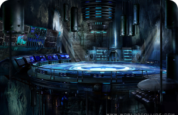

BATMAN
Bruce Wayne es el único personaje que se identifica como Batman y
aparece en Batman, Detective Comics, Batman y Robin, y Batman: The Dark Knight. Dick Grayson vuelve al manto de Nightwing
Ver más